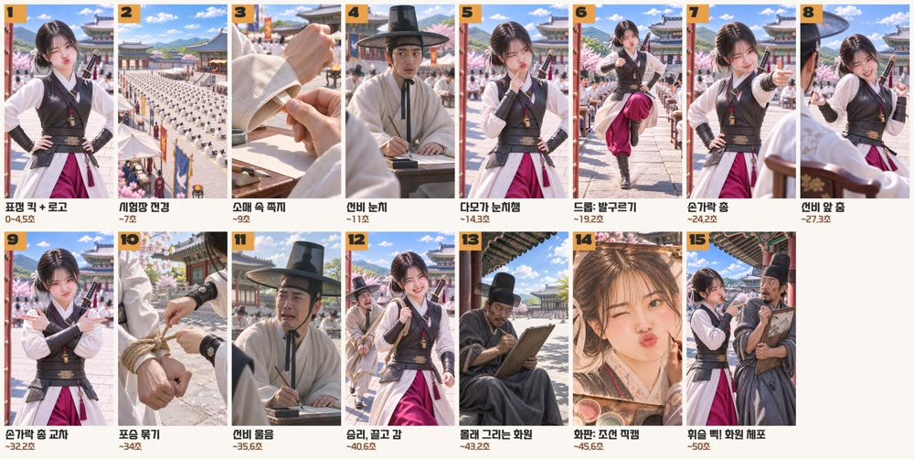

Photoreal cinematic film still, one single continuous frame, a fictional character. Same woman and same costume as the reference, waist-up, hands on hips. Hair changed: black hair center parted and tied in a low messy bun at the nape, two thin loose strands framing her face. Comic cute expression: one eye squeezed shut in a wink, lips pushed out in a big duck-lip pout, cheeks puffed slightly. A small brass whistle on a cord at her chest. Bright sunny Korean palace courtyard, blue sky, white clouds, scholars in white blurred behind. Fresh pastel palette, no fog.
크레용팜 제작 자료
체포하겠어 다모 버전
힉스필드 사이트를 한 번도 열지 않고 만들었습니다. 채팅창에 말로 지시했습니다.
웹드라마 감독이 AI 영상을 어떻게 만지는지, 쓴 방법과 프롬프트를 그대로 정리했습니다. 먼저 해 본 사람이 대신 부딪혀 본 것들이니 필요한 것만 가져가세요.
힉스필드와 클로드 연결하기
MCP는 클로드가 다른 프로그램을 직접 다루게 이어 주는 연결선입니다. 한 번 연결해 두면 채팅창에서 그림과 영상을 뽑고, 결과를 받아서 편집까지 넘길 수 있습니다.
- 클로드 앱이나 claude.ai에서 설정의 커넥터로 들어갑니다.
- 커스텀 커넥터 추가를 누르고 이름은 Higgsfield, 주소는 아래를 넣습니다.
- 연결을 누르면 힉스필드 창이 뜹니다. 로그인하고 허용하면 끝입니다.
https://mcp.higgsfield.ai/mcp힉스필드 유료 구독이 필요하고, API 키는 필요 없습니다. 메뉴 이름은 앱 버전에 따라 조금 다를 수 있습니다.
만든 순서
- 음원 구간부터 고릅니다. 곡은 건너뛰지 말고 이어지는 구간으로 잡습니다.
- 꼭 살릴 동작 3~4개를 적습니다. 이번엔 첫 표정, 발구르기, 손가락 총, 휘슬이었습니다.
- 주인공 얼굴과 의상을 정합니다.
- 콘티를 그림으로 뽑아 음악에 얹어 봅니다. 영상 만들기 전에 여기서 흐름을 확인합니다.
- 제일 어려운 컷 하나만 시험합니다. 이게 되면 전체로 갑니다.
- 자막과 로고를 올리고 마지막에 업스케일합니다.

제가 실제로 보낸 말
프롬프트보다 감독 말투로 지시하는 게 더 잘 먹혔습니다. 판단은 사람이 하고, 손은 클로드가 움직이는 구조입니다.
한명이니까 잘하네
다섯 명 군무를 접고 주인공 한 명으로 재구성
수갑 생기는게 이상해 원안무랑도 맞아야지
원안무에 없는 동작 삭제
오히려 휘슬 소리 들릴때 휘슬부는게 포인트구만
곡의 휘슬 소리에 맞춰 부는 컷으로 변경
곡을 건너뛰면 끊겨서 이상하지
이어지는 39초 구간으로 다시 편집
안무를 캐릭터에 옮기는 법
- 모션 전이: 힉스필드 겐주츠(Genjutsu)에 캐릭터 그림과 동작 영상을 넣습니다. 동작 영상의 사람은 단색 배경에 두는 게 안정적입니다.
- 장면 다시 그리기: 그 결과를 시드댄스 2.5에 넣고 배경 그림과 함께 장면 전체를 새로 그립니다. 인물과 땅, 그림자가 한 번에 나와서 자연스럽습니다.
저는 공식 챌린지 안무를 참고했습니다. 따라 하실 때는 직접 찍은 동작이나 사용 허락을 받은 영상을 쓰세요. 실존 인물의 얼굴은 쓰지 않았습니다.
해 보니 달랐던 것들
여러 명보다 한 명이 잘 나옵니다
사람과 배경을 합성하지 마세요
모션 전이는 모델마다 다릅니다
계절은 다시 뽑지 말고 고칩니다
짧게 네 가지 더
- 전체를 뽑기 전에 가장 어려운 컷 하나만 시험합니다.
- 검토는 480p로 하고, 업스케일은 확정한 뒤 게시 직전에 합니다.
- 제목과 자막은 영상에 굽지 않습니다. 업스케일 전 영상에 넣으면 흐려집니다.
- 시작 프레임 고정, 음원, 얼굴 유지 지시를 한꺼번에 걸면 몸이 굳습니다. 레퍼런스 이미지만 넣어 보세요.
실제로 쓴 프롬프트
The woman from the reference image performs the exact same dance as the woman in the reference video, same steps, same arm movements, same timing, same framing. Her face, hair and outfit come from the reference image. The whole scene takes place in the Joseon palace exam yard from the reference image in peak Korean autumn at eye level: a stone aisle under her feet, red maple and golden ginkgo trees, fallen leaves on the stones, desks with seated examinees in white right beside her at natural human scale, the nearest seated men reaching about her waist height. Clear blue sky, natural sun shadow at her feet. No cherry blossoms. No green background. No text, no captions.
Change only the season to peak Korean autumn. Replace every pink cherry blossom with vivid red maple and golden ginkgo leaves, with fallen leaves on the stones. The woman's face, expression, every movement, her outfit, the camera and the timing stay exactly unchanged. No text.